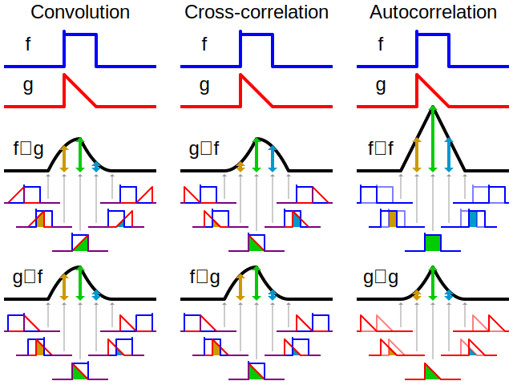

<!DOCTYPE html>
<html lang="en">
  <head>
    <meta charset="utf-8" />
    <meta name="viewport" content="width=device-width, initial-scale=1.0, maximum-scale=1.0, user-scalable=no" />

    <title></title>
    <link rel="stylesheet" href="dist/reveal.css" />
    <link rel="stylesheet" href="dist/theme/white.css" id="theme" />
    <link rel="stylesheet" href="plugin/highlight/zenburn.css" />
	<link rel="stylesheet" href="css/layout.css" />
	<link rel="stylesheet" href="plugin/customcontrols/style.css">
	<link rel="stylesheet" href="plugin/chalkboard/style.css">


    <script defer src="dist/fontawesome/all.min.js"></script>

	<script type="text/javascript">
		var forgetPop = true;
		function onPopState(event) {
			if(forgetPop){
				forgetPop = false;
			} else {
				parent.postMessage(event.target.location.href, "app://obsidian.md");
			}
        }
		window.onpopstate = onPopState;
		window.onmessage = event => {
			if(event.data == "reload"){
				window.document.location.reload();
			}
			forgetPop = true;
		}

		function fitElements(){
			const itemsToFit = document.getElementsByClassName('fitText');
			for (const item in itemsToFit) {
				if (Object.hasOwnProperty.call(itemsToFit, item)) {
					var element = itemsToFit[item];
					fitElement(element,1, 1000);
					element.classList.remove('fitText');
				}
			}
		}

		function fitElement(element, start, end){

			const size = (end + start) / 2;
			element.style.fontSize = `${size}px`;

			if(Math.abs(start - end) < 1){
				return;
			}

			if(element.scrollHeight > element.offsetHeight){
				fitElement(element, start, size);
			} else {
				fitElement(element, size, end);
			}		
		}


		document.onreadystatechange = () => {
			fitElements();
			if (document.readyState === 'complete') {
				if (window.location.href.indexOf("?export") != -1){
					parent.postMessage(event.target.location.href, "app://obsidian.md");
				}
				if (window.location.href.indexOf("print-pdf") != -1){
					let stateCheck = setInterval(() => {
						clearInterval(stateCheck);
						window.print();
					}, 250);
				}
			}
	};


        </script>
  </head>
  <body>
    <div class="reveal">
      <div class="slides"><section  data-markdown><script type="text/template">#### Signalai ir sistemos
## Analizė laiko srityje: konvoliucija, koreliacija, autokoreliacija
Paulius Tervydis</script></section><section  data-markdown><script type="text/template"><p style="line-height: 0" class="reset-paragraph"></img></p></script></section><section  data-markdown><script type="text/template">### Konvoliucija
- Signalų analizėje ***konvoliucija*** yra matematinė operacija su dviem funkcijomis (`$f$` ir `$g$`), kurios metu gaunama trečioji funkcija `$(f∗g)$`, išreiškianti, kaip vienos funkcijos formą keičia kita.
- Terminas ***konvoliucija*** reiškia ir jos metu gaunamą funkciją, ir jos skaičiavimo procesą. Ji apibrėžiama kaip dviejų funkcijų sandaugos integralas po to, kai viena iš jų yra apversta ir paslinkta. </script></section><section  data-markdown><script type="text/template">- Integralas skaičiuojamas visoms poslinkio reikšmėms, taip gaunama ***konvoliucijos funkcija***:
`$$y(t) = \int_{-\infty}^\infty x(\tau) h(t-\tau)d\tau$$`
	arba
`$$y(t) = x(t) ∗ h(t).$$`
- Sistemos išėjimo signalas `$y(t)$` randamas atliekant įėjimo signalo `$x(t)$` konvoliuciją su atsaku į impulsą `$h(t)$`.</script></section><section  data-markdown><script type="text/template">### Impulsinė charakteristika
   - Tiesinės pastovios laike (Linear Time-Invariant (LTI)) sistemos `$h_{\tau}(t)$` ***impulsinė charakteristika*** yra sistemos atsakas laike `$t$` į impulsą paduotą laiko momentu `$\tau$`. Ją galima aprašyti kaip `$h(t,\tau)=H(\delta(t-\tau))$`.
<p style="line-height: 0" class="reset-paragraph"></img></p></script></section><section  data-markdown><script type="text/template">### Tiesinė sistema
- Systema `$S$` yra **tiesinė**, jei tenkinamos abi savybės:
1.  ***Homogeniškumas***: jei `$y = S(x)$`, o `$a$` yra konstanta, tai `$ay = S(ax).$`
2. ***Adityvumas***: jei `$y_1 = S(x_1)$` ir `$y_2 = S(x_2)$`, tai `$y_1 + y_2 = S(x_1 + x_2).$`
- Homogeniškumo ir adityvumo apjungimas:
	- Jei `$y_1 = S(x_1)$` ir `$y_2 = S(x_2)$`, o `$a$` ir `$b$` yra konstantos, tai `$ay_1 + by_2 = S(ax_1 + bx_2)$`</script></section><section  data-markdown><script type="text/template">### Pastovi laike
- Jei `$H$` yra pastovi (invariantinė) laike, tai uždelsus įvesties ir išvesties signalus laiku `$\tau$`, ji turėtų duoti tą patį atsaką `$h_{\tau}(t) = h(t − \tau)$`. 
- Uždelsus, `$h_\tau$` tiesiog pasislinks laike.
<p style="line-height: 0" class="reset-paragraph"></img></p></script></section><section  data-markdown><script type="text/template">### Tiesinis sumavimas
- Sumavimas: jei `$y_n = S(x_n)$` visiems sveikiems `$n$` skaičiams `$(-\infty < n < \infty)$`, o `$a_n$` yra konstantos, tai
`$$\sum_n a_n y_n = S \left(\sum_n a_n x_n \right)$$`
- Sumavimo ir sistemos operatoriaus vieta formulėje gali būti sukeistos.</script></section><section  data-markdown><script type="text/template">- Integravimas: jei `$y = S(x)$`,
`$$\int_{-\infty}^\infty a(\tau) y(t-\tau)d\tau = S \left(\int_{-\infty}^\infty a(\tau) x(t-\tau)d\tau \right)$$`
- Integravimo ir sistemos operatoriaus vieta formulėje gali būti sukeistos.</script></section><section  data-markdown><script type="text/template">### Tiesinės sistemos išvestis
- Norime nustatyti tiesinės ir pastovios laike sistemos `$y(t)$` išėjimo išraišką, kai į įėjimą paduotas signalas `$x(t)$`. 
<p style="line-height: 0" class="reset-paragraph"></img></p></script></section><section  data-markdown><script type="text/template">- Signalą `$x(t)$` galime užrašyti kaip savo paties imtį
`$$x(t) = \int_{-\infty}^\infty x(\tau) \delta_\tau(t)d\tau$$`
- Tai reiškia, kad `$x(t)$` galima užrašyti kaip tam tikro (įvesties signalo amplitudę atitinkančio) aukščio `$\delta$` funkcijų integralą.
- Taikant sistemą `$H$` įėjimui `$x(t)$`,
`$$y(t) =H(x(t))= H \left(\int_{-\infty}^\infty x(\tau) \delta_\tau(t)d\tau \right)$$`</script></section><section  data-markdown><script type="text/template">- Jei sistemai taikomas tiesinis sumavimas, tai galime sukeisti sistemos operatoriaus ir integravimo tvarką
`$$y(t) = \int_{-\infty}^\infty x(\tau) H(\delta_\tau(t))d\tau)$$`
- Impulsinis atsakas yra
`$$h_\tau (t)=H(\delta_\tau (t)).$$`</script></section><section  data-markdown><script type="text/template">- Pakeitus impulsinį atsaką gaunama
  `$$y(t) = \int_{-\infty}^\infty x(\tau) h_\tau(t)d\tau.$$`
Tai yra superpozicijos integralas. Įvesties reikšmės `$x(\tau)h(t, \tau)d\tau$` yra superponuojamos (sudedamos) kiekvienam laikui `$\tau$`.</script></section><section  data-markdown><script type="text/template">- Jei `$H$` yra pastovi laike, tai  konvoliucinis (kompozicinis) integralas paprasčiau užrašomas taip
  `$$y(t) = \int_{-\infty}^\infty x(\tau) h_\tau(t-\tau)d\tau.$$`
- Tiesinės sistemos atsaką visiškai apibūdina jos impulsinis atsakas `$h(t)$`.</script></section><section  data-markdown><script type="text/template">###    Konvoliucijos grafinė interpretacija
- Konvoliucijos integralą galima analizuoti grafiškai:
	- `$h_{\tau}(t) = h(t - \tau)$` yra impulsinis atsakas, uždelstas laiku `$\tau$`.
	- Jei manome, kad `$h(t - \tau)$` yra funkcija nuo `$\tau,$` tada `$h(t - \tau)$` yra uždelstas iki laiko `$t$` ir invertuotas laiko ašyje.
<p style="line-height: 0" class="reset-paragraph"></img></p></script></section><section  data-markdown><script type="text/template">- Grafiškai tai galima pavaizduoti taip:
<p style="line-height: 0" class="reset-paragraph"></img></p></script></section><section  data-markdown><script type="text/template"><p style="line-height: 0" class="reset-paragraph"></img></p></script></section><section  data-markdown><script type="text/template"><p style="line-height: 0" class="reset-paragraph"></img></p></script></section><section  data-markdown><script type="text/template"><p style="line-height: 0" class="reset-paragraph"></img></p>
<p style="line-height: 0" class="reset-paragraph"></img></p></script></section><section  data-markdown><script type="text/template">###  Konvoliucijos savybės
- Konvoliucija yra komutatyvi: `$f(t)∗g(t)=g(t)∗f(t)$`. 
- Praktiškai, jei turime du signalus, kurių konvoliuciją reikia atlikti, tai galime pasirinkti vieną iš jų kaip signalą, kurį laikysime pastovų, o kitą "apversti ir slinkti".
- Konvoliucija yra asociatyvi: 
`$$f∗g∗h=g∗h∗g=...=h∗g∗f$$`
- Konvoliucijas su signalais galime atlikti bet kokia tvarka.</script></section><section  data-markdown><script type="text/template">- Konvoliucija taip pat yra distritibutyvi, `$$f∗(g+h)=f∗g+f∗h$$`Komutatyvioji, asociatyvioji ir distritibutyvioji savybės reiškia, kad:
	- sudėtis yra kaip įprasta algebroje, o
	- daugyba pakeičiama konvoliucija.</script></section><section  data-markdown><script type="text/template">###  Taikymo pavyzdys: signalo iškraipymas ryšių kanale
<p style="line-height: 0" class="reset-paragraph"></img></p>
Impulso atsakas:
<p style="line-height: 0" class="reset-paragraph"></img></p>
Tai yra uždelsimas ≈ 1 ir išlyginimas.</script></section><section  data-markdown><script type="text/template">- Siunčiamas signalas 0,5 bitai/s sparta; loginis signalas 0, 1, 0, 0, 1, 1, ...
<p style="line-height: 0" class="reset-paragraph"></img></p>
- Išėjimas yra uždelsta, išlyginta įvesties versija. 1 ir 0 lengvai atskiriami.</script></section><section  data-markdown><script type="text/template">- Paprastas signalas 4 bitai/s sparta; tas pats loginis signalas
<p style="line-height: 0" class="reset-paragraph"></img></p>
- Dėl išlyginimo, 1 ir 0 labai sunku atskirti.</script></section><section  data-markdown><script type="text/template">### Kryžminė koreliacija
- ***Kryžminė koreliacija*** yra panaši į dviejų funkcijų konvoliuciją.
- Signalų apdorojime kryžminė koreliacija yra dviejų masyvų arba signalų panašumo matas, priklausantis nuo vieno signalo poslinkio kito atžvilgiu. Tai dar vadinama slankiąja skaliarine sandauga.
- Ji paprastai naudojamas ieškant ilgesniame signale trumpesnio, žinomo požymio.</script></section><section  data-markdown><script type="text/template">- Tolydinėms funkcijoms `$f$` ir `$g$` kryžminė koreliacija apibrėžiama taip:
`$$(f\star g)(\tau)=r_{fg}(\tau)= \int_{t_1}^{t_2} \overline{f(t)}\cdot g(t+\tau)dt,$$`čia `$\overline{f(t)}$` - funkcijos `$f(t)$` kompleksinis jungtinis.</script></section><section  data-markdown><script type="text/template">### Autokoreliacija
- ***Autokoreliacija*** - tai signalo koreliacija su vėluojančia savo paties kopija kaip funkcija nuo vėlinimo dydžio. Neformaliai tai yra signalo ir jo suvėlintos versijos panašumas, priklausantis nuo vėlinimo tarp jų dydžio.
- Autokoreliacija yra matematinė priemonė, padedanti rasti signale pasikartojančius dėsningumus, pavyzdžiui, triukšmo užgožtą periodinį signalą arba nustatyti nežinomą pagrindinį signalo dažnį. </script></section><section  data-markdown><script type="text/template">- Autokoreliacija dažnai naudojama signalų apdorojime analizuojant funkcijas arba verčių sekas, pavyzdžiui, laiko srities signalus.
- Tolydžiai funkcijai `$f$`, autokoreliacija apibrėžiama taip:
`$$r_{ff}(\tau)=\int_{t_1}^{t_2} \overline{f(t)}\cdot f(t+\tau)dt$$`</script></section></div>
    </div>

    <script src="dist/reveal.js"></script>

    <script src="plugin/markdown/markdown.js"></script>
    <script src="plugin/highlight/highlight.js"></script>
    <script src="plugin/zoom/zoom.js"></script>
    <script src="plugin/notes/notes.js"></script>
    <script src="plugin/math/math.js"></script>
	<script src="plugin/mermaid/mermaid.js"></script>
	<script src="plugin/menu/menu.js"></script>
	<script src="plugin/customcontrols/plugin.js"></script>
	<script src="plugin/chalkboard/plugin.js"></script>

    <script>
      function extend() {
        var target = {};
        for (var i = 0; i < arguments.length; i++) {
          var source = arguments[i];
          for (var key in source) {
            if (source.hasOwnProperty(key)) {
              target[key] = source[key];
            }
          }
        }
        return target;
      }

      // default options to init reveal.js
      var defaultOptions = {
        controls: true,
        progress: true,
        history: true,
        center: true,
        transition: 'default', // none/fade/slide/convex/concave/zoom
        plugins: [
          RevealMarkdown,
          RevealHighlight,
          RevealZoom,
          RevealNotes,
          RevealMath.MathJax3,
		  RevealMermaid,
		  RevealCustomControls,
		  RevealMenu,
		  RevealChalkboard, 
        ],

		mathjax3: {
			mathjax: 'plugin/math/mathjax/tex-mml-chtml.js',
		},

		customcontrols: {
			controls: [
				{ icon: '<i class="fa fa-pen-square"></i>',
				title: 'Toggle chalkboard (B)',
				action: 'RevealChalkboard.toggleChalkboard();'
				},
				{ icon: '<i class="fa fa-pen"></i>',
				title: 'Toggle notes canvas (C)',
				action: 'RevealChalkboard.toggleNotesCanvas();'
				},
			]
		},
		menu: {
			loadIcons: false
		}
      };

      // options from URL query string
      var queryOptions = Reveal().getQueryHash() || {};

      var options = extend(defaultOptions, {"width":960,"height":700,"margin":0.04,"controls":true,"progress":true,"slideNumber":true,"transition":"slide","transitionSpeed":"default"}, queryOptions);
    </script>

    <script>
      Reveal.initialize(options);
    </script>
  </body>
</html>
